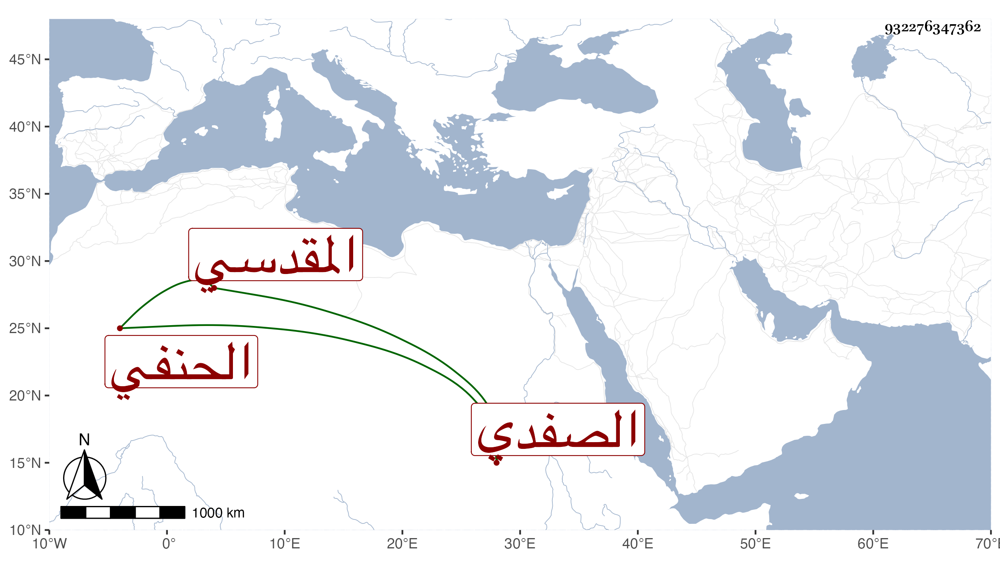

0902Sakhawi.DawLamic.ITO20230111-ara1.EIS1600.932276347362
Biography ID: 932276347362
90
أحمد بن علي بن محمد بن ضوء الشهاب أبو عبد العزيز الآتي الصفدي الأصل المقدسي الحنفي ويعرف بابن النقيب أخو يوسف الآتي . ولد في ليلة الاثنين سابع عشري رمضان سنة إحدى وخمسين وسبعمائة وسمع من الزيتاوي سنن ابن ماجه بفوت ومن اليافعي وخليل بن إسحاق الداراني وعبد المنعم بن أحمد الأنصاري والعلائي وحدث سمع منه الفضلاء كابن موسى ووصفه بالشيخ الإمام العالم وشيخنا الأبي ، قال شيخنا في معجمه أجاز لأولادي وذكره في أنبائه فقال : أحمد بن علي بن النقيب . تقدم في فقه الحنفية وشارك في فنون وكان يؤم بالمسجد الأقصى مات سنة ست عشرة .
